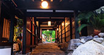
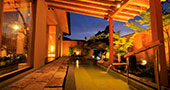
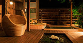
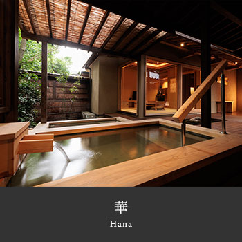
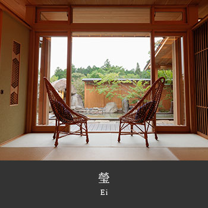
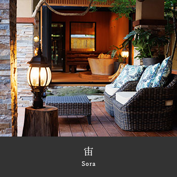
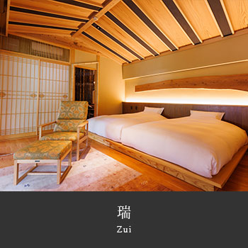
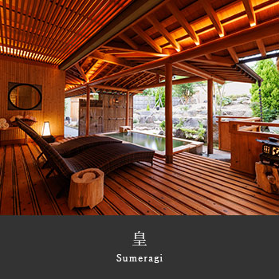

阿蘇の地下一千メートルから湧く湯を、十二棟それぞれの露天風呂で。 Water from a thousand metres beneath Aso, in twelve separate open-air baths. 涌自阿苏地下一千米的温泉，分注于十二栋各自的露天浴池。
- 各お部屋ページで紹介動画を順次公開中です。「瑞」客室 →
- 新しくボディケアメニューがスタートしました（要事前予約）。詳細 →
- SNSで源翠瓏の写真や動画を公開中 — Instagram / YouTube
- アーリーチェックインについて（有料／14:30〜） — FAQをご覧下さい
- Room-page introductory videos are being published in sequence. See rooms →
- A new body-care menu has started (advance reservation required). Details →
- Photos and videos on social media — Instagram / YouTube
- Early check-in (paid, from 14:30) — see FAQ
- 各客房介绍视频陆续公开中。前往客房介绍 →
- 全新美体护理菜单开启（需提前预约）。详细内容 →
- Instagram / YouTube 上分享源翠瓏的照片与视频 — Instagram / YouTube
- 可付费办理提前入住（14:30 起）。详见常见问题

 館内の写真 1 枚目を大きく表示View photo 1 of the ryokan放大查看馆内照片第 1 张
館内の写真 1 枚目を大きく表示View photo 1 of the ryokan放大查看馆内照片第 1 张

館内の写真 2 枚目を大きく表示View photo 2 of the ryokan放大查看馆内照片第 2 张 館内の写真 3 枚目を大きく表示View photo 3 of the ryokan放大查看馆内照片第 3 张
館内の写真 3 枚目を大きく表示View photo 3 of the ryokan放大查看馆内照片第 3 张
 館内の写真 4 枚目を大きく表示View photo 4 of the ryokan放大查看馆内照片第 4 张
館内の写真 4 枚目を大きく表示View photo 4 of the ryokan放大查看馆内照片第 4 张

館内の写真 5 枚目を大きく表示View photo 5 of the ryokan放大查看馆内照片第 5 张
館内の写真 6 枚目を大きく表示View photo 6 of the ryokan放大查看馆内照片第 6 张十二棟、すべて離れTwelve villas, each detached十二栋，皆为独栋
数寄屋造りにレトロモダンを合わせた設えで、棟ごとに間取りも湯のかたちも違います。露天風呂は源泉かけ流し。どの棟にも、その棟だけの湯があります。Sukiya carpentry met with a retro-modern hand. No two villas share a layout, or a bath. Every open-air bath runs straight from the source — each villa has water of its own.数寄屋建筑与复古摩登相融，每一栋的格局与浴池皆不相同。露天温泉皆为源泉挂流——每一栋都有属于自己的汤。












湯と、食The water and the table汤与食
客室の露天風呂のほかに、貸切の大露天風呂とサウナ。料理は和とフレンチを合わせた創作で、九州の山と海のものを使います。Beyond the bath in your own villa, a large open-air bath house you can reserve, and a sauna. At the table, Japanese and French worked in one kitchen, from the mountains and seas of Kyushu.除客房的露天温泉外，另有可包场的大露天浴场与桑拿。料理为和法融合的创作，取材九州的山与海。


ご予約Reservation预约
WEBで予約するBook online网络预约
プラン・料金・空室状況をご覧いただけます。 See plans, rates and availability. 可查看方案、价格与空房状况。
お電話で予約するBook by telephone电话预约
ご相談・直前のご予約はお電話が確実です。 Best for questions and same-day stays. 咨询与临近日期的预约请来电。
受付時間 10:00–18:00（日本時間） 10:00–18:00 JST 受理时间 10:00–18:00（日本时间）
お問い合わせEnquiry咨询
受付時間 10:00–18:00（日本時間） Telephone hours 10:00–18:00 JST 受理时间 10:00–18:00（日本时间）